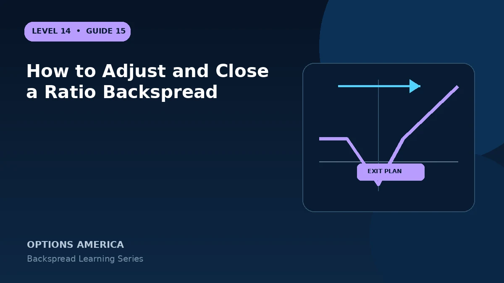

Plan exits for quiet, moderate and extreme moves and evaluate rolling strikes, expiration or ratio without creating naked risk.
Close the full ratio
A multi-leg closing order removes both the short option and extra longs together. This is the clearest response when the catalyst or volatility thesis is invalidated.
Manage a large favorable move
As price moves beyond the long strike, the position may develop large directional delta. Scaling out of one long option changes it into a vertical or covered relationship that must be recalculated.
Roll strikes or time
Moving the ratio can reposition the loss valley or extend duration, often for an additional debit. Count all prior cash flows and verify the new maximum loss and breakeven.
Prevent naked exposure
Never assume all legs filled. Closing the long options first can leave an uncovered short call or put with substantially different margin and assignment risk.
A practical example
After an upside gap, a 1-by-2 call backspread is profitable. Selling one long call leaves a one-to-one vertical; selling both longs first leaves a naked short call until it is closed.
This simplified example focuses on selected expiration outcomes; live prices and risks will differ. Live option prices also reflect the underlying price, time decay, rates, dividends, liquidity and transaction costs. Greeks are theoretical estimates, not guarantees.
Turn the payoff into a trading plan
Before entering how to adjust and close a ratio backspread, write down the stock price, both strikes, expiration, contract ratio and total opening credit or debit. Then calculate the quiet-side result, maximum loss at the long-option strike and the far-move breakeven. These three checkpoints make the position easier to monitor and help prevent the attractive tail payoff from hiding the loss valley.
Test at least five scenarios: no move, a move to the short strike, a move to the long strike, a move to breakeven and a move well beyond breakeven. Repeat the exercise with implied volatility higher and lower and with less time remaining. The resulting range is more useful than a single payoff line because a live backspread can change substantially before expiration.
Finally, define the catalyst, maximum acceptable loss, review date and closing method in advance. Use one multi-leg order whenever possible, confirm every fill and recalculate the remaining position before changing any leg. Assignment, liquidity and transaction costs belong in the plan even when the expiration loss appears defined.
Frequently asked questions
Must a winning backspread be held?
No. Convex profit can be realized early.
Can one long option be sold?
Yes, but the remaining position changes.
Why use a ratio closing order?
It helps avoid temporary uncovered exposure.
Continue the Backspread Strategies cluster
Explore related guides: Backspread Options Strategy: 12 Mistakes to Avoid · How to Build a Ratio Backspread · Backspread Expiration and DTE Selection. For a structured sequence, use the free Level 14 – Backspread course.
Options involve risk and are not suitable for every investor. This material is educational and is not investment, tax or legal advice. Greeks are theoretical estimates, and contract terms and broker requirements can vary.